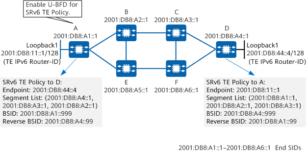
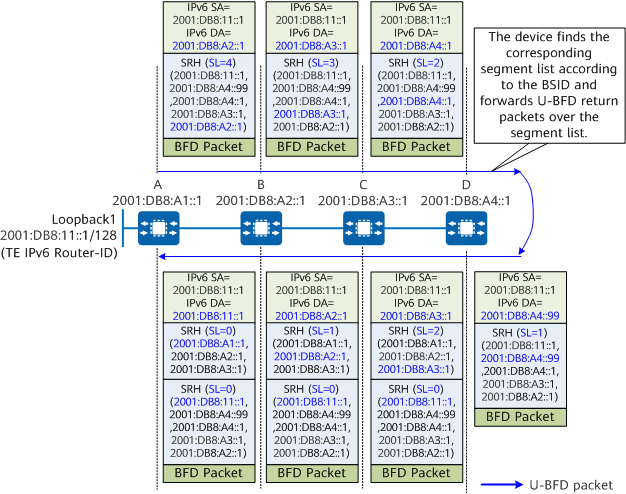

In inter-AS SRv6 TE Policy scenarios, the constraints on the reflector discriminator make network planning inconvenient. To address this issue, U-BFD for SRv6 TE Policy is introduced.
Figure 1 shows the U-BFD for SRv6 TE Policy detection process.
The U-BFD for SRv6 TE Policy detection process is as follows:
If the headend receives a U-BFD reply, it considers that the corresponding segment list in the SRv6 TE Policy is normal. Otherwise, it considers that the segment list fails. If all the segment lists of a candidate path fail, U-BFD triggers a switchover to the backup candidate path.
U-BFD return packets are forwarded over IPv6 routes. In cases where the primary paths of multiple SRv6 TE Policies between two nodes differ due to different path constraints, if U-BFD return packets are transmitted over the same path and this path fails, all the involved U-BFD sessions may go down. As a result, all the SRv6 TE Policies between the two nodes go down. This problem also applies to U-BFD sessions of multiple segment lists in the same SRv6 TE Policy.
By default, if HSB is not enabled for an SRv6 TE Policy, U-BFD detects all the segment lists of only the candidate path with the highest preference in the SRv6 TE Policy. Conversely, when HSB is enabled, U-BFD can detect all the segment lists of the candidate paths with the highest and second highest preferences in the SRv6 TE Policy. If the segment lists of the candidate path with the highest preference all fail, a switchover to the HSB path is triggered.
To address the problem caused by the forwarding of U-BFD for SRv6 TE Policy packets over an IPv6 route, a solution is provided to allow U-BFD return packets to be forwarded over a segment list.
Figure 2 shows the key configurations that enable the forwarding of U-BFD return packets over a segment list. The corresponding configuration requirements are as follows:

After the forwarding of U-BFD return packets over a segment list is enabled and a U-BFD session is initiated for a specific segment list, the reverse BSID of this segment list is sent to the peer device through BFD packets. The peer device then finds the corresponding segment list according to the received BSID and forwards return packets over this segment list.
Return packets can also be encapsulated in Insert or Encaps mode, depending on the encapsulation mode configured on device D for the SRv6 TE Policy.
Figure 3 shows the detection process when U-BFD return packets forwarded over a segment list are encapsulated in Insert mode.

Figure 4 shows the detection process when U-BFD return packets forwarded over a segment list are encapsulated in Encaps mode.